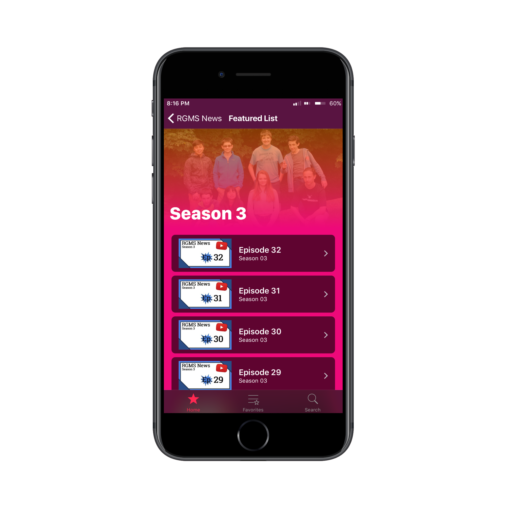
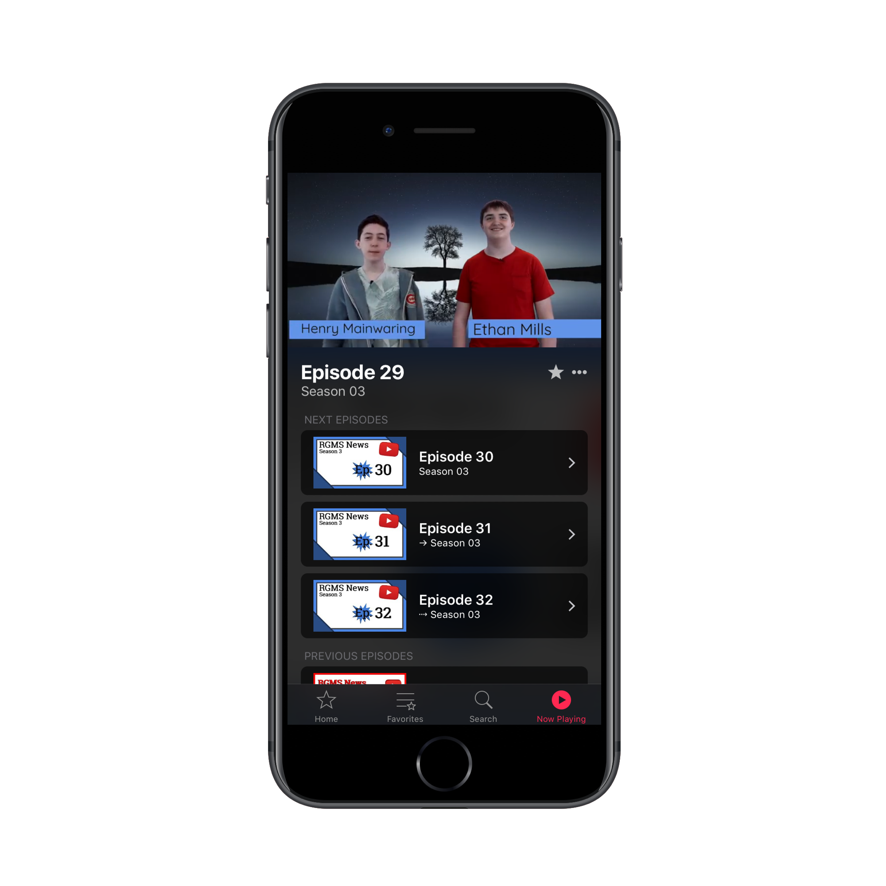

All the latest episodes...
The RGMS News App uses the YouTube Data API to fetch all the latest episodes, so you never miss out. The RGMS News App automatically updates when new episodes come out, without the need for an app update.
...and all past seasons
Watch all episodes, all the way back to Season 1, Episode 1. With curated content, you can binge watch season 1, 2, 3, or any future seasons of RGMS News.
Curated Content
Similar to the iOS App Store or iTunes Store, the RGMS News app has frequently-updated themed lists, such as 'holiday episodes' or 'HenDog appearences'. Want to submit a list or list idea? Leave an idea, or if you made a list, a comma-seperated collection of YouTube video id's to the email below.
Sleek Video Player
Watch your videos undistracted in the RGMS News App video player. Share, favorite, and open your videos in Safari/YT App. See the next and previous videos below for easy access.
Favorites
Exclusice to the RGMS News App, favorite the best episodes of RGMS News to save for later under the 'favorites' tab. Swipe left on a video item or the star in the video player to add a favorite.
Compatibility
The RGMS News App requires iOS 9.3 or later. Version 1.0 was optimized to work on iPhone 4s screen sizes, 5/5s screen sizes, 6, and 6 Plus sizes. Future versions may not support iOS 9/iPhone 4s.